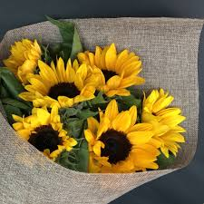

ROSE are also available with us. We provide roses of best quality as per the needs of our customers.Roses have a long and colorful history. They have been symbols of love, beauty, war, and politics. The rose is, according to fossil evidence, 35 million years old. .
.jpeg)
LILY are also available with us. We provide lilies of best quality as per the needs of our customers.This species has pale yellow flowers, with a darker central trumpet. The long, narrow leaves are slightly greyish green in colour and rise from the base of the stem. The plant grows from a bulb. The flowers produce seeds, which when germinated, take five to seven years to produce a flowering plant. .
SUNFLOWERS are also available with us. We provide sunflowers of best quality as per the needs of our customers.Helianthus (/ˌhiːliˈænθəs/)[3] is a genus comprising about 70 species of annual and perennial flowering plants in the daisy family Asteraceae.[4][5] Except for three South American species, the species of Helianthus are native to North America and Central America. .
.jpeg)
DAISY are also available with us. We provide daisy of best quality as per the needs of our customers.Bellis perennis is a common European species of daisy, of the family Asteraceae, often considered the archetypal species of that name. Many related plants also share the name "daisy", so to distinguish this species from other daisies it is sometimes qualified as common daisy, lawn daisy or English daisy.
.jpeg)
DAFFODIL are also available with us. We provide daffodils of best quality as per the needs of our customers.Narcissus is a genus of predominantly spring flowering perennial plants of the amaryllis family, Amaryllidaceae. Various common names including daffodil,[Note 1] narcissus and jonquil are used to describe all or some members of the genus. Narcissus has conspicuous flowers with six petal-like tepals surmounted by a cup- or trumpet-shaped corona. The flowers are generally white or yellow (also orange or pink in garden varieties), with either uniform or contrasting coloured tepals and corona. .
By Gina on October 16,2012.
Worth every penny.
By chetan on March 1,2018
Just beautiful! Great !!